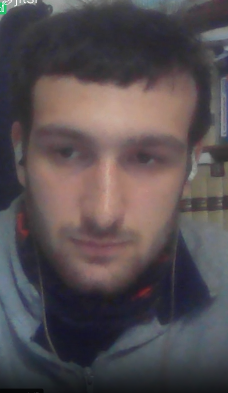

Per i miei 2/3 lettori (i 25 di Manzoni non sono raggiungibili) mi descrivo brevemente.
Sono nato a Roma il 15 Marzo (le Idi di Marzo) del 2004.
Da bambino sono sempre stato piuttosto curioso, ho sempre amato leggere
e accumulare libri anche in età in cui la loro lettura era sostanzialmente
inutile.

Tuttavia nell'età dell'informazione rapida e della lotta per l'attenzione è sempre più difficile continuare a curiosare in maniera così bella e salubre come facevo un tempo. Il sito che stai visitando è forse uno dei tanti tentativi che
faccio ultimamente per battagliare contro questi diavoli maledetti che vogliono conquistare il nostro tempo e le nostre vite, non si sa bene perché.
Comunque tornando a noi ho sempre studiato con un certo interesse e quindi ho intrapreso il liceo classico, mi sono diplomato al liceo classico Augusto di Roma nel 2022. Per il liceo classico ho una forma di amore e odio, ma comunque, allo stato attuale delle cose, la considero una tipologia di scuola valida, seppure non perfetta e facente parte di un sistema scolastico anacronistico.
Come lingue conosco l'italiano, l'inglese, il greco antico e il latino, e ultimamente mi sto cimentando con il tedesco, seppure con risultati minimi per ora.
All'università ho deciso di fare fisica perché ero affascinato, sul finire delle scuole superiori, dal potere predittivo della teoria, e da questo strano fatto che la matematica potesse descrivere il mondo.
Ho tentato di entrare alla Normale di Pisa, come prima cosa, ma non ce ne fu per me, non ero abbastanza preparato.
Decisi quindi di optare, e forse per il meglio, per l'università di Roma la Sapienza.
A "La Sapienza" le cose mi vanno tutto sommato abbastanza bene, mi sto per laureare alla triennale (alla fine ce l'ho fatta cum laude Nota del me del Futuro!!!)in tempo, cosa non comunissima, a quanto pare, in questa facoltà.
La mia opinione sulla conoscenza e sulla scienza è cambiata tanto in questi tre anni, e credo di poter dire di essere maturato e migliorato intellettualmente.
Al momento credo che mi indirizzerò nell'ambito della materia condensata, robe di meccanica quantistica applicate ai solidi e ai liquidi. Nonostante non sia più, come ero in modo infantile qualche anno fa, un difensore strenuo della purezza della teoria nei confronti degli esperimenti, opinione quanto mai sciocca, comunque preferisco cimentarmi su un qualcosa di teorico, ma nel vero significato del termine, non in quello sciocco.
Teorico in somma nel senso di interprete, assieme allo sperimentale, degli esperimenti, e magari che si dedica di più a mostrare risultati già noti ma in chiave nuova, piuttosto che a cercare direttamente nuovi fenomeni.
Per quanto riguarda il corpo pratico da quando avevo 11 anni lotta greco-romana, che è tipo una lotta a mani aperte. Attraverso questo sport ho avuto tantissime esperienze interessanti, e ho avuto anche qualche soddisfazione.
Al momento lo pratico alla Borgo Prati di Roma, ma sono stato anche alla VVFF Sorgini e allo Sporting Club Villanova. Sulla lotta magari ci faccio qualche articolo a parte.
Il mio mezzo di trasporto principale è una Yamaha XT600E del 2001, che è una moto decente per l'età che ha. La porto in qualità di moto vecchia e funzionante, non in qualità di moto vintage sia chiaro.
Sono cristiano cattolico, battezzato, comunicato e cresimato, praticante più o meno, anche se non amo questa distinzione, come se una religione fosse il tennis o il judo.
Sono abbastanza appassionato di religione, fra le altre cose.
Sono attratto dalla cultura cristiana orientale, cioè il cattolicesimo bizantino, ma anche la cultura ebraica ha il suo fascino su di me. So leggere l'ebraico, si intende che conosco l'alfabeto e so riconoscere un paio di parole, non lo so affatto parlare.
Per quanto riguarda i rapporti sociali ho un fratello, qualche amico e sono single ;-).
Spero che questa breve biografia non vi abbia tediati più di quanto è permesso e spero che vi piaccia il resto del sito.